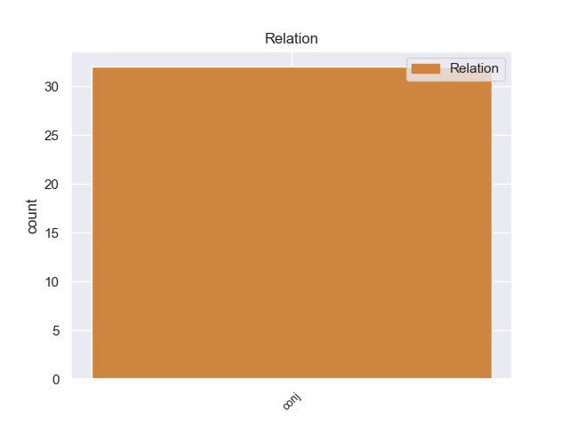
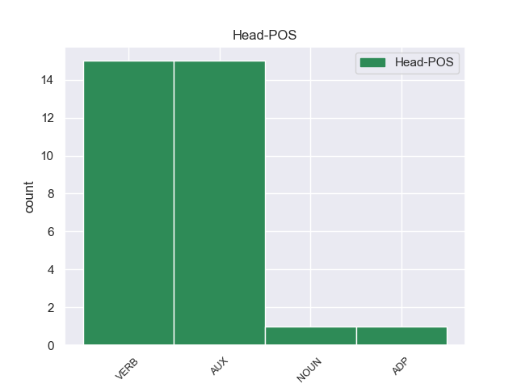
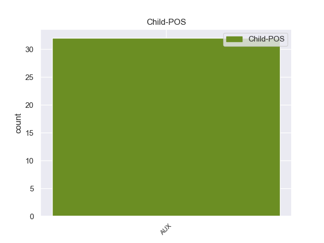

Distribution of features within this leaf



Agreement Rules sorted by frequency.
- When the dependent token is the conjunct(conj) of the head token, and the head token is AUX and the dependent token is AUX.
1 E _ _ _ _ 0 _ _ _
2 1961 _ _ _ _ 0 _ _ _
3 e _ _ _ _ 0 _ _ _
4 voe _ AUX _ Mood=Ind|Number=Sing|Person=3|Tense=Past|VerbForm=Fin 0 _ _ _
5 adanvet _ _ _ _ 0 _ _ _
6 pilipino _ _ _ _ 0 _ _ _
7 hag _ _ _ _ 0 _ _ _
8 e _ _ _ _ 0 _ _ _
9 1987 _ _ _ _ 0 _ _ _
10 e _ _ _ _ 0 _ _ _
11 voe _ AUX _ Mood=Ind|Number=Sing|Person=3|Tense=Past|VerbForm=Fin 4 conj _ _
12 anvet _ _ _ _ 0 _ _ _
13 ez _ _ _ _ 0 _ _ _
14 - _ _ _ _ 0 _ _ _
15 ofisiel _ _ _ _ 0 _ _ _
16 filipino _ _ _ _ 0 _ _ _
17 . _ _ _ _ 0 _ _ _
1 En _ _ _ _ 0 _ _ _
2 abeg _ _ _ _ 0 _ _ _
3 da _ _ _ _ 0 _ _ _
4 se _ _ _ _ 0 _ _ _
5 ne _ _ _ _ 0 _ _ _
6 voe _ VERB _ Mood=Ind|Number=Sing|Person=0|Tense=Past|VerbForm=Fin|Voice=Act 0 _ _ _
7 ket _ _ _ _ 0 _ _ _
8 aotreet _ _ _ _ 0 _ _ _
9 gant _ _ _ _ 0 _ _ _
10 eskob _ _ _ _ 0 _ _ _
11 Kemper _ _ _ _ 0 _ _ _
12 an _ _ _ _ 0 _ _ _
13 aotrou _ _ _ _ 0 _ _ _
14 Poupiquet _ _ _ _ 0 _ _ _
15 ( _ _ _ _ 0 _ _ _
16 1759 _ _ _ _ 0 _ _ _
17 - _ _ _ _ 0 _ _ _
18 1840 _ _ _ _ 0 _ _ _
19 ) _ _ _ _ 0 _ _ _
20 , _ _ _ _ 0 _ _ _
21 ar _ _ _ _ 0 _ _ _
22 pezh _ _ _ _ 0 _ _ _
23 a _ _ _ _ 0 _ _ _
24 dalvez _ _ _ _ 0 _ _ _
25 ne _ _ _ _ 0 _ _ _
26 voe _ AUX _ Mood=Ind|Number=Sing|Person=3|Tense=Past|VerbForm=Fin 6 conj _ _
27 ket _ _ _ _ 0 _ _ _
28 implijet _ _ _ _ 0 _ _ _
29 en _ _ _ _ 0 _ _ _
30 ilizoù _ _ _ _ 0 _ _ _
31 . _ _ _ _ 0 _ _ _
1 E _ _ _ _ 0 _ _ _
2 114 _ _ _ _ 0 _ _ _
3 e _ _ _ _ 0 _ _ _
4 voe _ NOUN _ Mood=Ind|Number=Sing|Person=3|Tense=Past|VerbForm=Fin 0 _ _ _
5 lonket _ _ _ _ 0 _ _ _
6 Osroene _ _ _ _ 0 _ _ _
7 gant _ _ _ _ 0 _ _ _
8 an _ _ _ _ 0 _ _ _
9 Impalaeriezh _ _ _ _ 0 _ _ _
10 roman _ _ _ _ 0 _ _ _
11 ma _ _ _ _ 0 _ _ _
12 voe _ AUX _ Mood=Ind|Number=Sing|Person=3|Tense=Past|VerbForm=Fin 4 conj _ _
13 degemeret _ _ _ _ 0 _ _ _
14 da _ _ _ _ 0 _ _ _
15 Stad _ _ _ _ 0 _ _ _
16 sujet _ _ _ _ 0 _ _ _
17 damemren _ _ _ _ 0 _ _ _
18 . _ _ _ _ 0 _ _ _
1 Bolívar _ _ _ _ 0 _ _ _
2 a _ _ _ _ 0 _ _ _
3 yeas _ _ _ _ 0 _ _ _
4 da dar ADP _ Mood=Ind|Number=Sing|Person=3|Tense=Pres|VerbForm=Fin 0 _ _ _
5 Europa _ _ _ _ 0 _ _ _
6 en _ _ _ _ 0 _ _ _
7 - _ _ _ _ 0 _ _ _
8 dro _ _ _ _ 0 _ _ _
9 e _ _ _ _ 0 _ _ _
10 1804 _ _ _ _ 0 _ _ _
11 ha haver AUX _ Mood=Ind|Number=Sing|Person=3|Tense=Pres|VerbForm=Fin 4 conj _ _
12 daremprediñ _ _ _ _ 0 _ _ _
13 a _ _ _ _ 0 _ _ _
14 reas _ _ _ _ 0 _ _ _
15 lez _ _ _ _ 0 _ _ _
16 Napoleon _ _ _ _ 0 _ _ _
17 . _ _ _ _ 0 _ _ _
Disagree Examples:
1 Aze _ _ _ _ 0 _ _ _
2 emañ _ VERB _ Gender=Masc|Mood=Ind|Number=Sing|Person=3|Polite=Form|Tense=Fut|VerbForm=Fin|Voice=Act 0 _ _ _
3 al _ _ _ _ 0 _ _ _
4 lidourien _ _ _ _ 0 _ _ _
5 , _ _ _ _ 0 _ _ _
6 beleien _ _ _ _ 0 _ _ _
7 , _ _ _ _ 0 _ _ _
8 masikoded _ _ _ _ 0 _ _ _
9 hag _ _ _ _ 0 _ _ _
10 ar _ _ _ _ 0 _ _ _
11 ganerien _ _ _ _ 0 _ _ _
12 - _ _ _ _ 0 _ _ _
13 iliz _ _ _ _ 0 _ _ _
14 o _ _ _ _ 0 _ _ _
15 deus _ _ _ _ 0 _ _ _
16 roet _ _ _ _ 0 _ _ _
17 an _ _ _ _ 0 _ _ _
18 anv _ _ _ _ 0 _ _ _
19 d'al _ _ _ _ 0 _ _ _
20 lec'h _ _ _ _ 0 _ _ _
21 ( _ _ _ _ 0 _ _ _
22 galleg _ _ _ _ 0 _ _ _
23 chant _ _ _ _ 0 _ _ _
24 = _ _ _ _ 0 _ _ _
25 kan _ _ _ _ 0 _ _ _
26 ) _ _ _ _ 0 _ _ _
27 ha _ _ _ _ 0 _ _ _
28 peurvuiañ _ _ _ _ 0 _ _ _
29 ne _ _ _ _ 0 _ _ _
30 vez vez AUX _ Aspect=Hab|Mood=Ind|Number=Sing|Person=3|Polarity=Pos|Tense=Pres 2 conj _ _
31 aotreet _ _ _ _ 0 _ _ _
32 nemet _ _ _ _ 0 _ _ _
33 al _ _ _ _ 0 _ _ _
34 lidourien _ _ _ _ 0 _ _ _
35 e _ _ _ _ 0 _ _ _
36 - _ _ _ _ 0 _ _ _
37 pad _ _ _ _ 0 _ _ _
38 al _ _ _ _ 0 _ _ _
39 lidoù _ _ _ _ 0 _ _ _
40 . _ _ _ _ 0 _ _ _
1 Gant _ _ _ _ 0 _ _ _
2 Andrea _ _ _ _ 0 _ _ _
3 Palladio _ _ _ _ 0 _ _ _
4 ha _ VERB _ Mood=Ind|Number=Sing|Person=3|Tense=Pres|VerbForm=Fin 0 _ _ _
5 Jacopo _ _ _ _ 0 _ _ _
6 Tintoretto _ _ _ _ 0 _ _ _
7 e _ _ _ _ 0 _ _ _
8 voe _ AUX _ Mood=Ind|Number=Sing|Person=3|Tense=Past|VerbForm=Fin 4 conj _ _
9 dilennet _ _ _ _ 0 _ _ _
10 en _ _ _ _ 0 _ _ _
11 Akademiezh _ _ _ _ 0 _ _ _
12 an _ _ _ _ 0 _ _ _
13 Tresañ _ _ _ _ 0 _ _ _
14 e _ _ _ _ 0 _ _ _
15 Firenze _ _ _ _ 0 _ _ _
16 e _ _ _ _ 0 _ _ _
17 1566 _ _ _ _ 0 _ _ _
18 . _ _ _ _ 0 _ _ _
1 E _ _ _ _ 0 _ _ _
2 miz _ _ _ _ 0 _ _ _
3 C'hwevrer _ _ _ _ 0 _ _ _
4 1993 _ _ _ _ 0 _ _ _
5 e _ _ _ _ 0 _ _ _
6 teuas teua VERB _ Mood=Ind|Number=Sing|Person=2|Tense=Imp|VerbForm=Fin 0 _ _ _
7 Dihun _ _ _ _ 0 _ _ _
8 Penn _ _ _ _ 0 _ _ _
9 - _ _ _ _ 0 _ _ _
10 ar _ _ _ _ 0 _ _ _
11 - _ _ _ _ 0 _ _ _
12 Bed _ _ _ _ 0 _ _ _
13 da _ _ _ _ 0 _ _ _
14 vezañ _ _ _ _ 0 _ _ _
15 ur _ _ _ _ 0 _ _ _
16 gevredigezh _ _ _ _ 0 _ _ _
17 kerent _ _ _ _ 0 _ _ _
18 hag _ _ _ _ 0 _ _ _
19 e _ _ _ _ 0 _ _ _
20 miz _ _ _ _ 0 _ _ _
21 Mezheven _ _ _ _ 0 _ _ _
22 1993 _ _ _ _ 0 _ _ _
23 e _ _ _ _ 0 _ _ _
24 voe _ AUX _ Gender=Masc|Number=Sing|Person=3|Tense=Past 6 conj _ _
25 krouet _ _ _ _ 0 _ _ _
26 Dihun _ _ _ _ 0 _ _ _
27 - _ _ _ _ 0 _ _ _
28 Breizh _ _ _ _ 0 _ _ _
29 . _ _ _ _ 0 _ _ _
1 Kargoù _ _ _ _ 0 _ _ _
2 uhel _ _ _ _ 0 _ _ _
3 a _ _ _ _ 0 _ _ _
4 voe _ _ _ _ 0 _ _ _
5 fiziet _ _ _ _ 0 _ _ _
6 e _ _ _ _ 0 _ _ _
7 Sugawara _ _ _ _ 0 _ _ _
8 e _ _ _ _ 0 _ _ _
9 lez _ _ _ _ 0 _ _ _
10 an _ _ _ _ 0 _ _ _
11 Impalaer _ _ _ _ 0 _ _ _
12 Uda _ _ _ _ 0 _ _ _
13 met _ _ _ _ 0 _ _ _
14 e _ _ _ _ 0 _ _ _
15 901 _ _ _ _ 0 _ _ _
16 e _ _ _ _ 0 _ _ _
17 voe _ AUX _ Mood=Ind|Number=Sing|Person=3|Tense=Past|VerbForm=Fin 0 _ _ _
18 iriennet _ _ _ _ 0 _ _ _
19 a _ _ _ _ 0 _ _ _
20 - _ _ _ _ 0 _ _ _
21 enep _ _ _ _ 0 _ _ _
22 dehañ _ _ _ _ 0 _ _ _
23 gant _ _ _ _ 0 _ _ _
24 e _ _ _ _ 0 _ _ _
25 eneber _ _ _ _ 0 _ _ _
26 Fujiwara _ _ _ _ 0 _ _ _
27 no _ _ _ _ 0 _ _ _
28 Tokihira _ _ _ _ 0 _ _ _
29 ha haver AUX _ Mood=Ind|Number=Sing|Person=3|Tense=Pres|VerbForm=Fin 17 conj _ _
30 torret _ _ _ _ 0 _ _ _
31 e _ _ _ _ 0 _ _ _
32 voe _ _ _ _ 0 _ _ _
33 eus _ _ _ _ 0 _ _ _
34 e _ _ _ _ 0 _ _ _
35 gargoù _ _ _ _ 0 _ _ _
36 hag _ _ _ _ 0 _ _ _
37 anvet _ _ _ _ 0 _ _ _
38 da _ _ _ _ 0 _ _ _
39 gargiad _ _ _ _ 0 _ _ _
40 bihan _ _ _ _ 0 _ _ _
41 e _ _ _ _ 0 _ _ _
42 Dazaifu _ _ _ _ 0 _ _ _
43 , _ _ _ _ 0 _ _ _
44 e _ _ _ _ 0 _ _ _
45 Proviñs _ _ _ _ 0 _ _ _
46 Chikuzen _ _ _ _ 0 _ _ _
47 Kyushu _ _ _ _ 0 _ _ _
48 . _ _ _ _ 0 _ _ _
1 Ganet _ _ _ _ 0 _ _ _
2 e _ _ _ _ 0 _ _ _
3 voe _ VERB _ Mood=Ind|Number=Sing|Person=3|Tense=Past|VerbForm=Fin 0 _ _ _
4 e _ _ _ _ 0 _ _ _
5 Sant _ _ _ _ 0 _ _ _
6 - _ _ _ _ 0 _ _ _
7 Petersbourg _ _ _ _ 0 _ _ _
8 d'ar _ _ _ _ 0 _ _ _
9 25 _ _ _ _ 0 _ _ _
10 a _ _ _ _ 0 _ _ _
11 viz _ _ _ _ 0 _ _ _
12 Gwengolo _ _ _ _ 0 _ _ _
13 1846 _ _ _ _ 0 _ _ _
14 , _ _ _ _ 0 _ _ _
15 ha haver AUX _ Mood=Ind|Number=Sing|Person=3|Tense=Pres|VerbForm=Fin 3 conj _ _
16 marvet _ _ _ _ 0 _ _ _
17 eo _ _ _ _ 0 _ _ _
18 e _ _ _ _ 0 _ _ _
19 Graz _ _ _ _ 0 _ _ _
20 , _ _ _ _ 0 _ _ _
21 Aostria _ _ _ _ 0 _ _ _
22 , _ _ _ _ 0 _ _ _
23 d'an _ _ _ _ 0 _ _ _
24 22 _ _ _ _ 0 _ _ _
25 a _ _ _ _ 0 _ _ _
26 viz _ _ _ _ 0 _ _ _
27 Mezheven _ _ _ _ 0 _ _ _
28 1940 _ _ _ _ 0 _ _ _
29 . _ _ _ _ 0 _ _ _